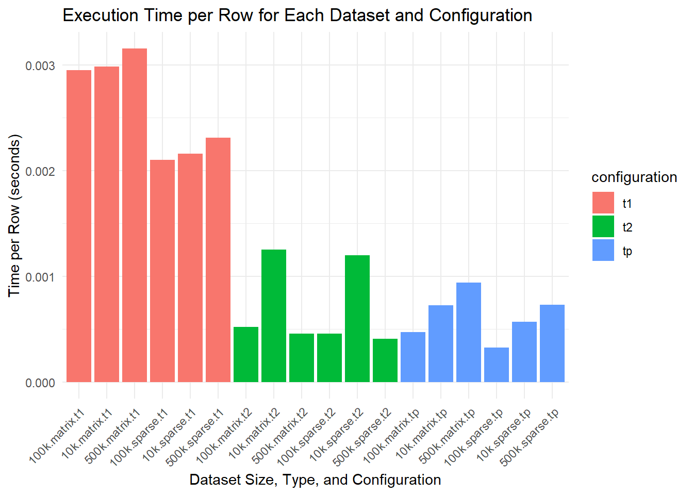

Chapter 6 Speeds
library(xgboost)
library(ROCR)
library(foreach)
library(doParallel)
library(Matrix)
library(readr)
library(dplyr)
library(ggplot2)
library(tidyr)
library(dplyr)6.1 Functions to run the tests
I will make 3 functions. One with my parallel processing, one with xgboost pp and then one with no pp at all so n thread = 1.
I have included the code so that you can see it but it is not important just know that we are looping r times and that the loops use bootstrapping for splits.
xgb1 <- function(r, xs, y, params, nrounds) {
start_time <- Sys.time() # Start timer
auc <- numeric(r) # Pre-allocate a numeric vector for AUC values
for (i in 1:r) {
# Bootstrap sampling
ind <- sample(nrow(xs), nrow(xs) * 0.8)
md_x <- xs[ind, ]
md_y <- y[ind]
test_x <- xs[-ind, ]
test_y <- y[-ind]
# onvert to DMatrix
dtrain <- xgb.DMatrix(data = md_x, label = md_y)
dtest <- xgb.DMatrix(data = test_x, label = test_y)
# Train the model
params <- list(objective = "binary:logistic", eval_metric = "auc")
model <- xgb.train(params = params,
data = dtrain,
nrounds = nrounds,
nthread = 1)
predictions <- predict(model, dtest)
pred <- ROCR::prediction(predictions, test_y)
perf <- ROCR::performance(pred, "auc")
auc[i] <- perf@y.values[[1]]
}
end_time <- Sys.time() # End timer
time_taken <- as.numeric(end_time - start_time, units = "secs")
list(auc = auc, time_taken = time_taken)
}xgb2 <- function(r, xs, y, params, nrounds) {
start_time <- Sys.time() # Start timer
auc <- numeric(r) # Initialize the AUC vector to store AUC values for each iteration
for (i in 1:r) {
# Bootstrap sampling
ind <- sample(nrow(xs), nrow(xs) * 0.8)
md_x <- xs[ind, ]
md_y <- y[ind]
test_x <- xs[-ind, ] # Potential indexing issue
test_y <- y[-ind] # Potential indexing issue
# onvert to DMatrix
dtrain <- xgb.DMatrix(data = md_x, label = md_y)
dtest <- xgb.DMatrix(data = test_x, label = test_y)
# Train the model
params <- list(objective = "binary:logistic", eval_metric = "auc")
model <- xgb.train(params = params,
data = dtrain,
nrounds = nrounds,
nthread = detectCores() - 1)
# Predicting and calculating AUC
predictions <- predict(model, dtest)
pred <- ROCR::prediction(predictions, test_y)
perf <- ROCR::performance(pred, "auc")
auc[i] <- perf@y.values[[1]]
}
end_time <- Sys.time() # End timer
time_taken <- as.numeric(end_time - start_time, units = "secs")
list(mean_auc = mean(auc), time_taken = time_taken)
}xgbpar <- function(r, xs, y, params, nrounds) {
start_time <- Sys.time() # Start timer
cl <- makeCluster(detectCores() - 1) # Use one less than the total number of cores
registerDoParallel(cl)
# Parallel processing using foreach
results <- foreach(i = 1:r, .combine = 'c', .packages = c('xgboost', 'ROCR')) %dopar% {
# Bootstrap sampling
ind <- sample(nrow(xs), nrow(xs) * 0.8)
md_x <- xs[ind, ]
md_y <- y[ind]
test_x <- xs[-ind, ] # Potential indexing issue
test_y <- y[-ind] # Potential indexing issue
# onvert to DMatrix
dtrain <- xgb.DMatrix(data = md_x, label = md_y)
dtest <- xgb.DMatrix(data = test_x, label = test_y)
# Train the model
params <- list(objective = "binary:logistic", eval_metric = "auc")
model <- xgb.train(params = params,
data = dtrain,
nrounds = nrounds,
nthread = 1)
predictions <- predict(model, dtest)
pred <- prediction(predictions, test_y)
perf <- performance(pred, "auc")
perf@y.values[[1]]
}
# Stop the cluster
stopCluster(cl)
end_time <- Sys.time() # End timer
time_taken <- as.numeric(end_time - start_time, units = "secs")
list(mean_auc = mean(results), time_taken = time_taken)
}6.2 10,000 rows
Create the data. as a note this data has no relations so it wont be predictable 20 factor collums 10 numeric
set.seed(123)
df <- data.frame(y = sample(c(0, 1), 10000, replace = TRUE))
for(i in 1:10) {
df <- df %>% mutate(!!paste0("num", i) := runif(10000))
}
for(i in 1:20) {
df <- df %>% mutate(!!paste0("fac", i) := factor(sample(c("1", "2", "3"), 10000, replace = TRUE)))
}6.2.1 With a normal Matrix
6.2.2 With a sparse matrix
For a sparse matrix. The data must be one hot coded then turned into a dataframe. Then turned into a sparse matrix.
6.3 100,000 rows
set.seed(123)
df <- data.frame(y = sample(c(0, 1), 100000, replace = TRUE))
for(i in 1:10) {
df <- df %>% mutate(!!paste0("num", i) := runif(100000))
}
for(i in 1:20) {
df <- df %>% mutate(!!paste0("fac", i) := factor(sample(c("1", "2", "3"), 100000, replace = TRUE)))
}6.3.1 With a normal Matrix
6.3.2 With a sparse matrix
For a sparse matrix. The data must be one hot coded then turned into a dataframe. Then turned into a sparse matrix.
6.4 500,000 rows
set.seed(123)
df <- data.frame(y = sample(c(0, 1), 500000, replace = TRUE))
for(i in 1:10) {
df <- df %>% mutate(!!paste0("num", i) := runif(500000))
}
for(i in 1:20) {
df <- df %>% mutate(!!paste0("fac", i) := factor(sample(c("1", "2", "3"), 500000, replace = TRUE)))
}6.4.1 With a normal Matrix
6.4.2 With a sparse matrix
For a sparse matrix. The data must be one hot coded then turned into a dataframe. Then turned into a sparse matrix.
6.5 Presentations
Print them out
nrounds is 100 for all
10ks
matrix
## [1] 29.83851## [1] 12.51484## [1] 7.244743sparse
## [1] 21.60152## [1] 11.99408## [1] 5.705671100ks
matrix
## [1] 294.7602## [1] 52.10739## [1] 47.27411sparse
## [1] 210.2752## [1] 45.7418## [1] 32.72254500ks
matrix
## [1] 1576.609## [1] 228.8183## [1] 469.6008sparse
## [1] 1155.484## [1] 204.536## [1] 365.52256.6 Analysis
6.6.1 Graphs
pres <- data.frame(
size = rep(c("10k", "100k", "500k"), each = 6),
type = rep(c("matrix", "sparse"), each = 3, times = 3),
configuration = rep(c("t1", "t2", "tp"), times = 6),
time = c(t1sf, t2sf, tpsf, t1ssf, t2ssf, tpssf,
t1100, t2100, tp100, t1s100, t2s100, tps100,
t150, t250, tp50, t1s50, t2s50, tps50)
)# Plot 1: Sparse times vs Normal matrix times
ggplot(pres, aes(x = interaction(size, configuration), y = time, fill = type)) +
geom_bar(stat = "identity", position = "dodge") +
labs(title = "Execution Time Comparison: Sparse vs Normal Matrix",
x = "Dataset and Configuration",
y = "Time") +
theme_minimal() +
theme(axis.text.x = element_text(angle = 45, hjust = 1))# Plot 2: Comparing t1 vs t2 vs tp by each dataset size
ggplot(pres, aes(x = interaction(size, type), y = time, fill = configuration)) +
geom_bar(stat = "identity", position = "dodge") +
labs(title = "Execution Time Comparison: t1 vs t2 vs tp",
x = "Dataset Size and Type",
y = "Time") +
theme_minimal() +
theme(axis.text.x = element_text(angle = 45, hjust = 1))
# Plot 3: Time per round for each dataset
pres <- pres %>%
mutate(time_per_round = time / 100) # Since nrounds is 100 for all
ggplot(pres, aes(x = interaction(size, type, configuration), y = time_per_round)) +
geom_bar(stat = "identity", fill = "steelblue") +
labs(title = "Time Per Round for Each Dataset",
x = "Dataset Size, Type, and Configuration",
y = "Time per Round") +
theme_minimal() +
theme(axis.text.x = element_text(angle = 45, hjust = 1))# Assuming the same setup as before, add the number of rows for each size
pres <- pres %>%
mutate(nrows = case_when(
size == "10k" ~ 10000,
size == "100k" ~ 100000,
size == "500k" ~ 500000
))
# Calculate the time per row
pres <- pres %>%
mutate(time_per_row = time / nrows)
# Plot: Time per nrow for each dataset
ggplot(pres, aes(x = interaction(size, type, configuration), y = time_per_row, fill = configuration)) +
geom_bar(stat = "identity", position = "dodge") +
labs(title = "Execution Time per Row for Each Dataset and Configuration",
x = "Dataset Size, Type, and Configuration",
y = "Time per Row (seconds)") +
theme_minimal() +
theme(axis.text.x = element_text(angle = 45, hjust = 1))
6.6.2 Takaways
With factor collums sparse seems to be better. With numeric collums though it would be worse. XGB is better with internal processing when nrows is huge. When nrows is smaller though we should use our own parrallel processing.
Also times include how many loops we are doing which is related to numcores of the machine being used if you look at our codes